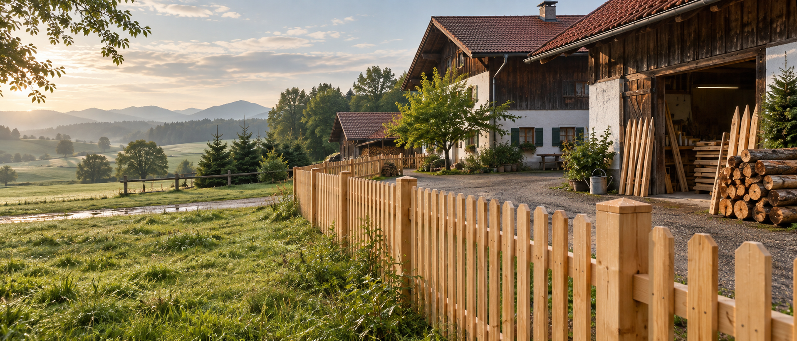
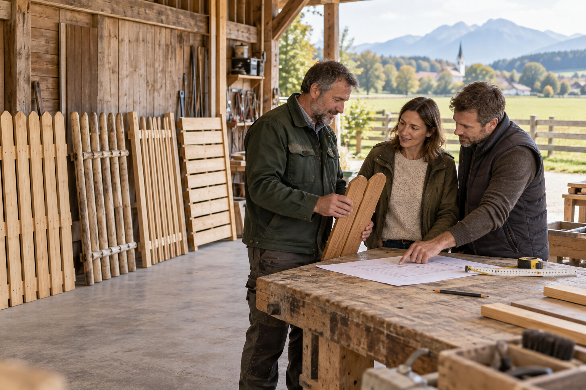
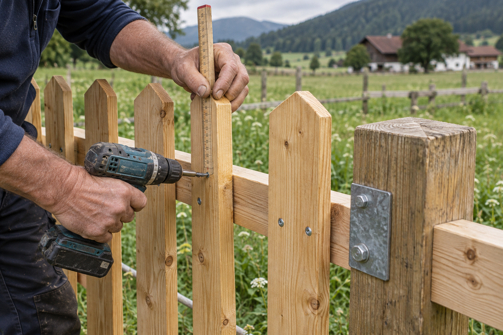
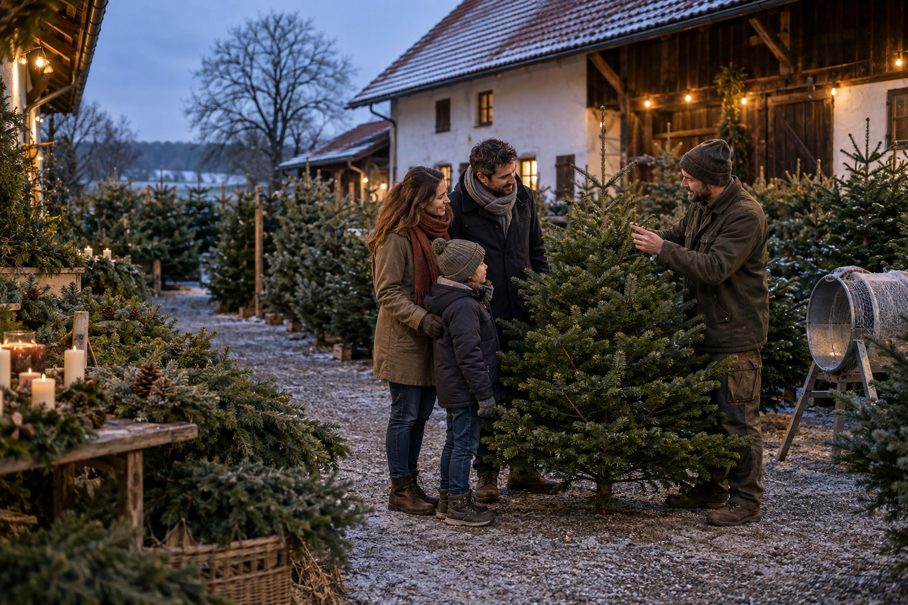

Holzzäune
Natürlich, langlebig und passend zu Gebäude und Grundstück geplant.

Vom Hof. Für Ihr Zuhause.
Holzprodukte, Zaunmontage und persönliche Beratung vom Giglberger Hof.
Natürlich passend
Von klassischem Lattenzaun bis zum robusten Weidezaun: Wir beraten persönlich, wählen das passende Material und montieren auf Wunsch vor Ort.
Natürlich, langlebig und passend zu Gebäude und Grundstück geplant.
Material für Eigenbau, Garten, Landwirtschaft und individuelle Lösungen.
Saubere Umsetzung vom Einmessen bis zum fertigen Zaunverlauf.
Erster Entwurf in wenigen Minuten
Die Vorschau ist eine Orientierung. Maße, Gelände und Ausführung prüfen wir anschließend persönlich.
Passt die Richtung? Dann bereiten wir daraus Ihre unverbindliche Anfrage vor.
Ihre Zusammenstellung

Persönlich statt anonym
Beim Giglberger Hof kommen Material, Erfahrung und Beratung zusammen. Statt eines anonymen Warenkorbs gibt es eine Lösung, die zum Grundstück passt.
Mit Familie Krieger sprechen →Ehrliches Handwerk
Der Konfigurator schafft eine gemeinsame Grundlage. Die fachliche Prüfung und die saubere Ausführung bleiben persönlich.


Wenn es wieder nach Tanne duftet
Nordmanntannen, Fichten, Dekozweige sowie Advents- und Türkränze – saisonal direkt am Hof.
Verkaufszeiten für die kommende Saison folgen.Einfach erreichbar